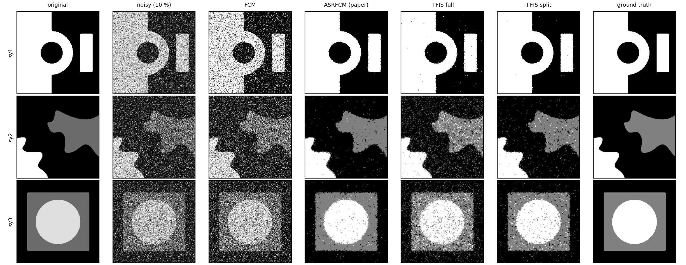

- Segmentation = split an image into homogeneous regions
- Fuzzy C-means: every pixel belongs to every cluster with a degree u ∈ [0, 1]
- FCM looks only at the gray value of each pixel → noise flips memberships
- e.g. our FCM on sy3 with 15 % mixed noise: ACC ≈ 56 %
- Goal of the paper: robust segmentation under mixed Gaussian + salt-and-pepper + multiplicative noise, with few iterations

sy1–sy3, 10 % mixed noise: FCM vs. the method (ours)